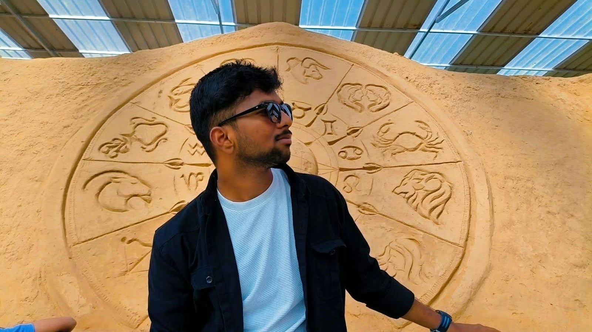
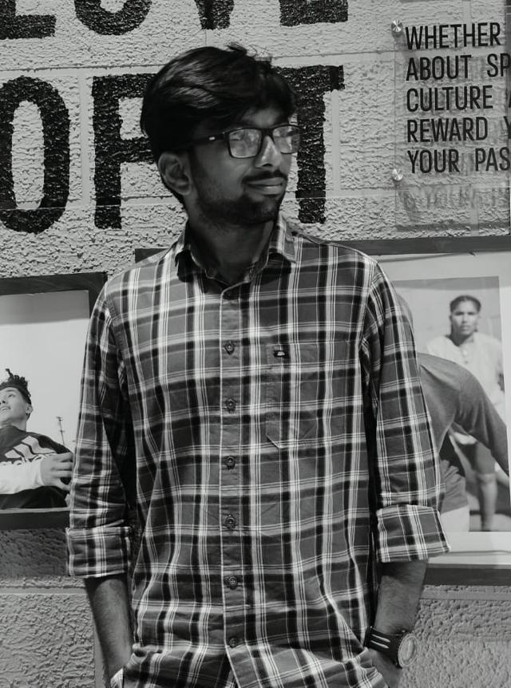

AGENTICA 2.0 / HACKATHON
Third place.
A reason to keep building.
Agentica 2.0 Hackathon · IIIT Sri City
₹5,000 PRIZE

OPEN TO OPPORTUNITIES / PORTFOLIO ’26
Software Developer, Java Full Stack Developer, and AI & ML Engineer opportunities.
I build backend systems, full stack applications, and AI-powered solutions with curiosity, precision, and a problem-solving mindset.
Open to Software Developer, Java Full Stack Developer, and AI & ML Engineer opportunities.
01 / BEHIND THE SYSTEMS
My academic path is in Computer Science and Engineering, specializing in AI & ML (2022–2026). Most of my time goes into Java and Spring Boot: designing REST APIs, writing SQL, and understanding why a system behaves the way it does.
At Chakrith IoT Labs, I contribute to backend features for vehicle tracking and fleet management, test APIs and applications, document bugs, and validate fixes. At ISRO SDSC SHAR, I worked on a reliability portal with Spring Boot and a browser interface.
Computer vision is another thread of that curiosity. My solar panel defect detection project connected YOLOv8 inference, FastAPI and a React interface. I’m early in my career, and I want to keep learning from real systems and strong teams.

02 / THE ENGINEERING TOOLKIT
A foundation in Java. Experience across the stack. Curiosity that extends into computer vision.
03 / FOUNDATIONS → ENGINEERING
From Sullurpeta to Tirupati. A journey from academic foundations to building software that solves real problems.
04 / LEARNING IN PRACTICE
Two internships. Different engineering environments. A growing understanding of how reliable software gets built.
05 / SELECTED WORK
Explore the problem, the approach and my contributions. Each diagram is an illustration of the system.
06 / MILESTONES THAT MATTER
AGENTICA 2.0 / HACKATHON
Agentica 2.0 Hackathon · IIIT Sri City
₹5,000 PRIZE
CONSISTENT PROBLEM SOLVING
100+Data Structures and Algorithms.
A resume milestone, built one problem at a time.
LEARNING BEYOND THE CLASSROOM
ISRO
Completed at SDSC SHAR, Sriharikota.
Explore the experienceCONTINUED LEARNING / CERTIFICATIONS
OPEN TO THE NEXT CHAPTER
I’m open to Software Developer, Java Full Stack Developer, and AI & ML Engineer opportunities where I can keep learning, solve meaningful problems, and build reliable software.
{{email}}